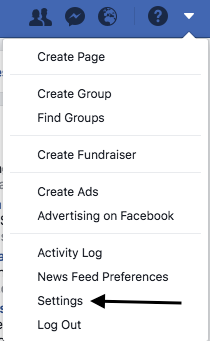

Facebook was founded back in February 2004, by a 19 year old Mark Zuckerberg. It was actually called "thefacebook.com" at first! Over time its user base grew, and is currently at an astonishing 2.2 billion users world-wide! People use Facebook for a whole host of reasons, maybe a page to promote their business, from musical artists, to well-known corporations, or simply the average joe wanting to connect and stay in touch with their friends. There are of course risks to using a social media platform and below we will give you some top-tips to help you stay safe when using Facebook!
Facebook offers a plethora of tools within its settings to help you to decide how you wish to experience Facebook. First, we need to go to settings, as you can see in the picture.
Once there you'll be able to see a number of options relating to general privacy, in there you can choose who you want to share your posts with, limiting it to just friends, or even blocking certain people from seeing your posts. If there is someone you do not want to be able to see your posts, you may block them here. You can also choose who can send your friend requests, and this can be limited to only those who are friends of your friends, this can help against you recieving friend requests from people you do not know, which you certainly should not accept!